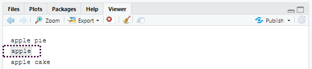
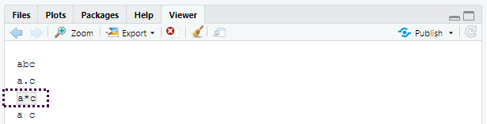
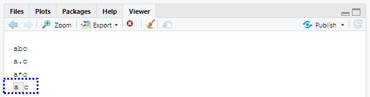
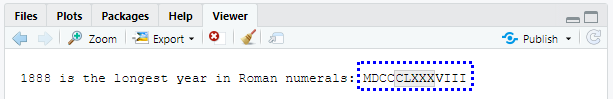

10.3 정규표현식을 이용한 패턴 매칭
정규표현식은 문자열의 패턴을 기술하는 매우 간결한 언어이다. 이해하는 데 다소 시간이 걸리지만 한번 이해하면 매우 유용함을 알 수 있을 것이다.
정규표현식을 배우기 위해 우리는 str_view() 와 str_view_all() 를 사용할 것이다. 이 두 함수는 문자 벡터와 정규표현식을 취해, 이들이 어떻게 매칭되는지를 보여준다. 우리는 매우 단순한 정규표현식부터 시작해서 점진적으로 복잡한 형태를 볼 것이다. 패턴 매칭을 충분히 익힌 후에는 다양한 stringr 함수로 적용하는 법을 배울 것이다.
10.3.1 기본 매칭
가장 간단한 패턴은 문자열 전체 (exact) 매칭이다.
x <- c("apple", "banana", "pear")
str_view(x, "an")
- R Studio의 Viewer 패널에 결과가 표시된다.
"an"패턴과 일치하는 문자열은"banana"
다음으로 간단한 단계는 (줄바꿈을 제외한) 임의의 문자와 매칭하는 . 이다.
str_view(x, ".a.")
apple
그런데 "." 이 임의의 문자와 매칭된다면, 문자 "." 는 어떻게 매칭하겠는가? ’이스케이프’를 사용하여 우리가 특별 동작을 사용하려는 것이 아니라, 정확하게 매칭하고 싶다는 것을 정규표현식에 표현해야 한다.
정규표현식도 문자열과 마찬가지로 특별한 동작을 이스케이프하기 위해 역슬래시(\ )를 사용한다. 따라서 . 를 매칭하기 위해서는 정규표현식 \. 을 써야한다. 그런데 이렇게 하면 문제가 생긴다. 정규표현식을 나타내기 위해 문자열을 사용했고 \ 도 문자열에서 이스케이프 상징어로 사용하였다.
따라서 정규표현식 \. 를 작성하기 위해서는 문자열 "\\." 이 필요하다.
# To create the regular expression, we need \\
dot <- "\\."
# But the expression itself only contains one:
writeLines(dot)## \.# And this tells R to look for an explicit .
str_view(c("abc", "a.c", "bef"), "a\\.c")
정규표현식에서 \ 를 이스케이프 문자로 사용한다면 문자 \ 는 도대체 어떻게 매칭하겠는가? 정규표현식 \\ 를 만들어 이스케이프해야 한다. 앞의 정규표현식을 만들려면 \ 를 이스케이프하는 문자열이 필요하다. 즉, 문자 \ 을 매칭하기 위해서 "\\\\" 라고 작성해야 한다. 즉, 하나를 매칭하기 위해 네 개의 역슬래시가 필요하다!
x <- "a\\b"
writeLines(x)## a\bstr_view(x, "\\\\")
여기서 정규표현식은 \. 과 같이 쓰고 정규표현식을 나타내는 문자열은 "\\." 과 같이 쓸 것이다.
10.3.1.1 연습문제
- 다음의 각 문자열
"\", "\\", "\\\"이\과 매칭되지 않는 이유를 설명하라. - 시퀀스
"'\를 어떻게 매칭하겠는가? - 정규표현식
\..\..\..은 어떤 패턴과 매칭되겠는가? 문자열로 어떻게 표현하겠는가?
10.3.2 앵커
기본적으로 정규표현식은 문자열의 일부를 매치한다. 정규표현식을 앵커로 고정(anchor) 하여 문자열의 시작 또는 끝과 매칭하면 유용한 경우가 많다. 다음을 사용할 수 있다.
^: 문자열의 시작과 매칭$: 문자열의 끝과 매칭
x <- c("apple", "banana", "pear")
str_view(x, "^a")
str_view(x, "a$")
두 기호를 올바로 기억하기 위해, 에반 미슐라가 알려준 다음의 연상 구문을 시도해보자. 파워(^ )로 시작하면, 돈($ )으로 끝나게 된다.
정규표현식을 문자열 전체와 강제로 매칭하도록 하려면 ^ 와 $ 로 고정하라.
x <- c("apple pie", "apple", "apple cake")
str_view(x, "apple")
str_view(x, "^apple$")
단어 사이의 경계(boundary)를 매칭시키려면 \b 를 사용하면 된다. 나는 R에서 이 방법을 자주 사용하지는 않지만 RStudio에서 다른 함수의 구성요소인 함수의 이름을 찾고자 할 때 한 번씩 사용한다. 예를 들어 \bsum\b 를 사용하여 summarize, summary, rowsum 등이 매칭되는 것을 피할 수 있다.
10.3.2.1 연습문제
문자열
"$^$"을 어떻게 매칭하겠는가?stringr::words의 일반적인 단어의 말뭉치(corpus)에서 다음에 해당하는 단어들을 찾는 정규표현식을 구하라.- “y”로 시작.
- “x”로 끝남.
- 정확히 세 글자. (
str_length()를 사용하는 부정행위를 하지 말 것!) - 7개 이상의 글자.
이 리스트는 길기 때문에
str_view()의match인수를 이용하여 매칭되는 단어들만, 혹은 매칭되지 않는 단어들만 볼 수 있다.
10.3.3 문자 클래스와 대체구문
하나 이상의 문자를 매칭하는 특별한 패턴들이 많이 있다. 우린 이미 하나를 보았는데, 줄바꿈을 제외하고 임의의 문자를 매칭하는 . 이다. 이 밖에도 네 개의 유용한 도구가 있다.
\d는 임의의 숫자와 매치한다.\s는 임의의 여백 문자(whitespace, 예를 들어 공백, 탭, 줄바꿈)와 매치한다.[abc]는 a, b 또는 c와 매치한다.[^abc]는 a, b, 또는 c를 제외한 임의의 문자와 매치한다.
\d 나 \s 를 포함하는 정규표현식을 만들기 위해서는 해당 문자열에서 \ 을 이스케이프 해야 하므로 "\\d" 나 "\\s" 로 입력해야 한다는 것을 기억하라.
단일 문자를 포함하는 문자형 클래스는 정규표현식에서 메타문자 하나를 포함하고 싶을때 역슬래시 이스케이프의 대안이 될 수 있다. 많은 사람들에게 가독성이 좋아진다.
# Look for a literal character that normally has special meaning in a regex
str_view(c("abc", "a.c", "a*c", "a c"), "a[.]c")
str_view(c("abc", "a.c", "a*c", "a c"), ".[*]c")
str_view(c("abc", "a.c", "a*c", "a c"), "a[ ]")
이 방법은 대부분 (전부는 아님) 정규표현식 메타문자에 적용된다: $ . | ? * + ( ) [ {. 안타깝게도 문자 클래스 내에서 조차 특수 의미가 있는 문자가 몇 있으며 백슬래시 이스케이프와 함께 해야 한다. ] \ ^ -.
대체구문을 이용하여 하나 이상의 대체 패턴 사이에서 선택하도록 할 수 있다. 예를 들어 abc|d..f 는 "abc" 또는 "deaf" 중 하나와 매치한다. | 는 우선순위가 높다. 따라서 abc|xyz 는 abc 혹은 xyz 와 매칭하라는 의미이지 abcyz 나 abxyz 와 매칭하라는 의미가 아니다. 수식 표현에서와 같이 연산 우선순위가 조금이라도 헷갈린다면 의도한 바를 분명히 하기 위해 괄호를 사용하라.
str_view(c("grey", "gray"), "gr(e|a)y")
10.3.3.1 연습문제
- 다음에 해당하는 모든 단어를 찾는 정규표현식을 작성하라.
- 모음으로 시작함
- 자음만 포함함 (힌트: ‘비’-자음 매칭에 대해 생각해보라.)
ed로 끝나지만eed로 끝나지는 않음ing혹은ize로 끝남
- 다음의 규칙을 데이터기반으로 증명하라. ‘c 뒤를 제외하고는 i가 e 앞’ (영어 스펠링에서 ei와 ie가 헷갈릴 경우 이 두 글자 앞에 c 가 나온 경우를 제외하고는 ei가 맞다는 규칙)
- ‘q’ 다음은 항상 ‘u’ 인가?
- 미국 영어가 아닌 영국 영어로 쓰여진 단어를 매칭하는 정규표현식을 작성하라.
- 여러분의 나라에서 일반적으로 쓰이는 전화번호를 매칭하는 정규표현식을 작성하라.
10.3.4 반복
다음 단계는 패턴이 몇 회 매칭하는지를 조정하는 것이다.
?: 0 또는 1회+: 1회 이상*: 0회 이상
x <- "1888 is the longest year in Roman numerals: MDCCCLXXXVIII"
str_view(x, "CC?")
str_view(x, "CC+")
str_view(x, 'C[LX]+')
이 연산자의 우선순위는 낮음을 주목하라. 예를 들어 colou?r 를 사용하여 미국식이나 영국식 스펠링을 매치할 수 있다. 따라서 bana(na)+ 에서와 같이 대부분의 경우 괄호가 필요하다.
또한 매칭 횟수를 정확하게 지정할 수 있다.
{n}: 정확히 n회{n,}: n회 이상{,m}: 최대 m회{n,m}: n과 m회 사이
str_view(x, "C{2}")
str_view(x, "C{2,}")
str_view(x, "C{2,3}")
기본값으로 이러한 매칭은 ‘그리디(greedy)’ 매칭이다. 즉, 가능한 가장 긴 문자열과 매칭한다. 이를 ‘게으르게(lazy)’ 만들 수 있다. 뒤에 ? 를 넣으면 가장 짧은 문자열과 매칭된다. 정규표현식의 고급 기능이지만 이런 것도 있다는 것을 알아놓으면 유용하다.
str_view(x, 'C{2,3}?')
str_view(x, 'C[LX]+?')
10.3.4.1 연습문제
?, +, *이 같음을{m,n}형식으로 설명하라.- 다음의 정규표현식이 어떤 것과 매칭하는지를 말로 설명하라. (사용하는 것이 정규표현식인지 아니면 그것을 정의하는 문자열인지 주의 깊게 읽고 확인하라.)
^.*$"\\{.+\\}"\d{4}-\d{2}-\d{2}"\\\\{4}"
- 다음의 모든 단어를 찾는 정규표현식을 작성하라.
- 세 개의 자음으로 시작.
- 세 개 이상의 모음이 연달아 있음.
- 두 개 이상의 모음-자음 쌍이 연달아 있음.
- 다음의 초보자 정규표현식 십자말풀이를 풀어보라. https://regexcrossword.com/challenges/beginner
10.3.5 그룹화와 역참조
앞서 괄호를 사용하여 복잡한 표현을 명확하게 하는 법을 배웠다. 괄호는 또한 (number 1, 2 등) 숫자달린 캡쳐 그룹을 생성한다. 캡쳐 그룹은 괄호 내에서 정규표현식의 일부와 매치되는 문자열 부분을 저장한다. \1, \2 등과 같이 역참조(backreference)로 캡쳐 그룹에 매칭된 텍스트를 참조할 수 있다. 예를 들어 다음의 정규표현식은 두 글자가 반복되는 과일 이름과 매칭한다.
fruit <- c("banana", "coconut", "cucumber", "jujube", "papaya", "salal berry")
str_view(fruit, "(..)\\1", match = TRUE)
(str_match() 와 함께 쓰면 왜 유용한지 곧 알게 될 것이다.)
10.3.5.1 연습문제
- 다음의 표현식이 어떤 것과 매칭할지 말로 설명하라.
(.)\1\1"(.)(.)\\2\\1"(..)\1"(.).\\1.\\1""(.)(.)(.).*\\3\\2\\1"
- 다음의 단어와 매칭하는 정규표현식을 작성하라.
- 같은 문자로 시작하고 끝남.
- 두 문자 반복이 있음(예를 들어 ’church’는 ’ch’를 두 번 반복).
- 적어도 세 곳에서 반복되는 문자가 있음(예컨대, ’eleven’은 ’e’가 세 개).